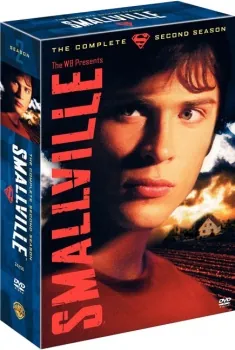

The genetics
Human cloning is at the centre of this episode. A grieving father uses his research on accelerated cell growth, boosted by kryptonite, to recreate his dead daughter as a ten-year-old clone, and keeps spare copies in tanks. The episode plays on the "replacement child" theme: the clone has the girl's appearance and childhood attachments, but lacks a moral conscience and turns violent. The scientist is driven by grief rather than ambition, but his work is financed by Lionel Luthor's LuthorCorp, which takes over the clone at the end; Lex accuses his father of continuing the secret Level Three projects he believed had been abandoned. Real cloning produces a genetically identical baby who must grow at a normal rate, so a clone could not be made at the age of the original or inherit her memories. Like many science-fiction clones, Emily also embodies the misconception that a copy will be a defective version of the person it replaces.
How genetics is portrayed
- Overall portrayal of genetics
- negative The episode criticises cloning as a doomed attempt to replace a dead child and corporate genetic research as playing God, and it ends unhappily with the clone taken by Lionel; Lex's admiration 'all ethics aside' is answered by Clark's concern for 'the little girl who doesn't know who she is'.
- Outcome of the genetic intervention
- negative The accelerated growth causes 'severe chromosomal damage', leaving the clone without a conscience; she stabs her father, tries to drown Lana, and ends as corporate property in a new lab.
- Pete Dinsmore
- ambivalent Aim: personal (neutral). A former LuthorCorp scientist, he clones his drowned daughter and accelerates the clone's growth with meteor rock, keeping two more copies in tanks, out of grief; Lex says 'you loved her enough to create her'. He is shown as sympathetic but irresponsible, keeping the clone locked up and lying to her, and Lionel finally removes him from the project.
- Lionel Luthor (LuthorCorp)
- villain Aim: not stated (not applicable). He secretly funds the cloning as part of dispersed 'Level 3' projects and wants a 'prototype', but his wider goal is never stated. The episode stages him as the 'bad man' who treats the girl as a 'defective specimen' and 'property of LuthorCorp', and Lex accuses him of playing God.
The story
Lana Lang believes she is seeing the ghost of Emily Dinsmore, a childhood friend who drowned six years earlier, and who appears to her still ten years old. Clark discovers that Emily is real and that she seems to vanish and walk through walls because she can move at super-speed. Searching her father's house, Clark and Lana find a hidden laboratory with two more copies of Emily asleep in glass tanks. Lex learns that Emily's father, Pete Dinsmore, had been working on accelerating cell growth and could bring a rabbit embryo to adulthood in days. Emily is a clone whose growth was accelerated with green meteor rock, and her father warns that she has no moral conscience. Angry at Lana for not saving her years ago, Emily pushes her off the bridge where she died, and Clark rescues her. Lex discovers that his father, Lionel Luthor, is funding the cloning research, and Lionel takes Emily away to a new lab.